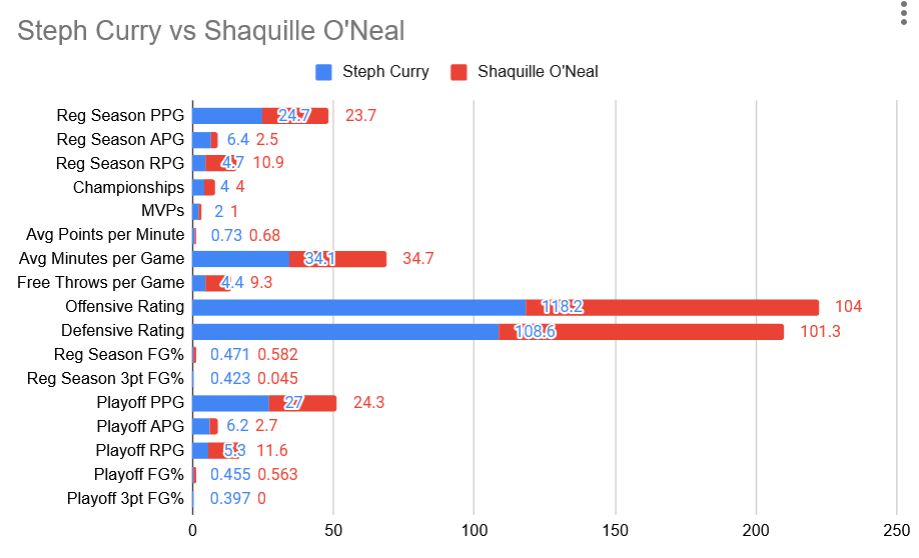

At #4 is Shaquille O'Neal:
Shaquille O'Neal was the most dominant center in the history of the league while, as we know, Steph Curry is the most dominant long range shooter. Looking at the stats, Stephen Curry has the edge over Shaquille O’Neal in several important ways, showing his effectiveness and modern influence. Curry scores more points per game in both the regular season and playoffs. He also excels in assists, offensive rating, and especially in three-point shooting, where his 42.3% accuracy in the regular season is much better than Shaq's 4.5%. While Shaq was excellent at controlling the area around the basket and getting rebounds, Curry's offensive rating is higher at 118.2 compared to Shaq’s 104. Curry's skills in shooting and creating plays for his team make him very influential, especially in today's game, which tends to focus on outside shooting and spreading the defense.